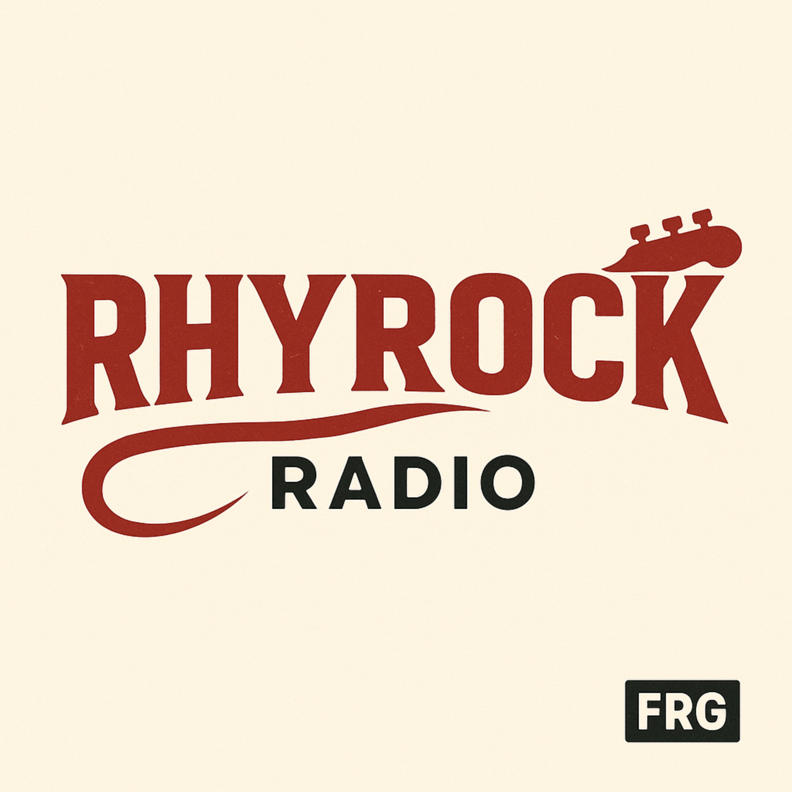

RhyRock Radio
Rock & Alternative – direkt mit Drive vom Rhy 🎸
Jetzt live hören

RhyRock Radio bringt Gitarren nach vorne: Classic Rock, Alternative und moderne Rock-Sounds. Für alle, die Druck, Riffs und echte Energie wollen.
Wenn du Rock fühlst – hier bist du richtig.
Was läuft bei RhyRock?
Von Rock-Hymnen bis Alternative-Perlen: RhyRock ist gebaut für Fokus, Drive und gute Stimmung. Ideal für Arbeit, Workout oder einfach, wenn du den Kopf frei bekommen willst.
Unser Anspruch: Rock, der funktioniert – nicht zufällig, sondern mit Charakter und Flow.
Kontakt & Feedback
Wünsche, Feedback oder Song-Ideen? kontakt@frg-radio.ch